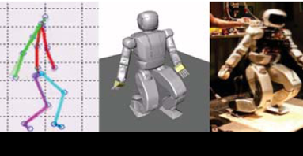
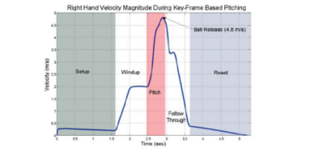
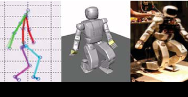
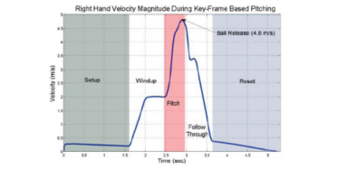

Humanoids 2012:
Daniel M. Lofaro
Title: Humanoid Pitching at a Major League Baseball Game: Challenges, Approach, Implementation and Lessons Learned
Abstract - Three different approaches of having a full-size humanoid throw the first pitch at a Major League Baseball game are tested and implemented. The approaches include kinematic mapping using a motion capture system to capture a human's throwing motion then mapping that to a full-size humanoid. The second method is a fully automated approach that uses the sparse reachable map to provide viable full body throwing trajectories to provide the end effector with the desired velocity. The third approach borrows from the animation industry. The key-frames of the desired trajectory are constructed by hand. The time between each key-frame is defined by the user. Interpolation methods are used to smoothly move between key frames while limiting the jerk. Each method is analyzed and tested in simulation and on physical hardware. The full-size humanoid used is the Hubo series robot. Based on the latter tests one method was chosen to successfully throw the ceremonial first pitch at a Major League Baseball game in April 2012.
 and Human (High DOF) kinimatic models") 



This project was conducted by the Drexel Autonomous Systems Lab (DASL), the Music Entertainment Technology Lab (MET)4, and sponsored by the National Science Foundation via the two grants; Partnerships for International Research and Education (#0730206) and Major Research Infrastructure Recovery and Reinvestment (#CNS-0960061).
Human to Humanoid Kinematic Mapping:
(Left to Right): (1) Human throwing underhand in sagittal plane while being recorded via a motion capture system. (2) Recorded trajectory mapped to high degree of freedom model. (3) High degree of freedom model mapped to lower degree of freedom OpenHUBO. (4) Resulting trajectory and balancing algorithm run on Hubo.
{kind=link}
Key-Frame Motion:
Key-frame motion profiles for humanoids borrows from the animation industries' long used techniques. When making an animation the master artist/cartoonist will create the character in the most important (or key) poses. The apprentice will draw all of the frames between the key poses. We borrowed this technique when we: posed the robot in the desired pose, record the values in joint space, and make a smooth motion between poses. In place of the apprentice, forth order interpolation methods were used to make smooth trajectories between poses. Forth order interpolation was used in order to limit the jerk on each of the joints. The resulting trajectory is a smooth well defined motion.
OpenHUBO using key-frame based method for throwing trajectory creation. Frames are read from top left to bottom right.